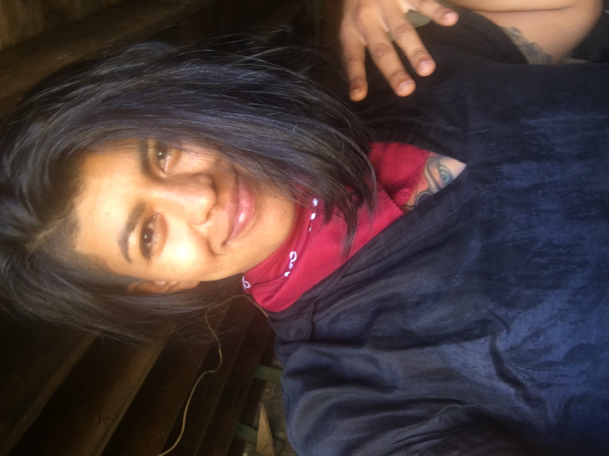

About Paula D!
I am a student at Code Fellows and am motivated to pursue my dreams in this lifetime. To live a full life will require me to have a black mamba mentality and resilence. I am working everyday to become a desireable, innovative, badass software developer. Remote work, understanding problem solving patterns, autonomy, and working in a skilled team enviroment are the things I am seeking.
Questions.
On this page you have answered some questions about me. Thank you. If I was sitting with you I'd ask these questions created by Vishen Lakhiani. They help me understand my motives and with more clarity understand my why actions.
- What experiences do you really want?
- Where do you want to grow?
- What do you want to contribute?
Here are the questions you answered with great patience.
- Does Paula enjoy nature?
- Is her favorite food fish?
- Was she born in Costa Rica?
- Does Paula spend time in saunas?
- Can she pick the best pineapple of all the grocery lands?
Top Ten Hikes I've experienced.
I really respect nature and have deep gratitude for the ways it supports us. In this modern life I know I am more balanced by having a daily practice of noticing nature. It is not always epic, most days it is simple and subtle. I walk in the rain. I walk without shoes on. I learn from the power of the elements. Stare at fire. Sing to my water and so on.
- Salkantay Trek to Machu Picchu, Peru
- The Beaten Path, Montana
- Cerro Chato Volcano, Costa Rica
- Barr Trail to Pikes Peak, Colorado
- Manitou Incline, Colorado
- Colchuck Lake, Washington
- Short Sand Beach Trail, Oregon
- Fern Canyon, California
- Bridger Tetons, Wyoming
- Alice Lake, Idaho
Work Experience.
Small is all. Everything is Everything. Oppurtunity is abundant. Just to say, what I do is not who I am but how I do it and what I think about it shapes me. In all of these positions I got to learn and question. I enjoy the process of learning and find joy collaborating with a vareity of diverse people in different walks of life. People are fascinating.
- Martial Arts Teacher for Kindergarteners
- Liitle Ceasars
- Subway
- Coffee Loft
- Moe's Burritos
- Sunset Pointe - Resturant
- The Grand Hotel - Resturanut Server
- Montana Concervation Corps
- Massage Envy - Licensed Massage Therapist
- Inertia Coffee Roasters
- The Broadmoor - Housekeeping
- Kirby Vacuum Salesperson
- Brilliant Life Chiropractic
- High Tide Cannabis - Grower Manager
- Complete Chiropractic
- Opened Stay Kind and Unwind
- Operated my own Trash Pick-Up Non-Profit
- Olympic Sports and Spine - Current
Education
I learn like water. Always in motion, moving towards the sea. I feel unconveintional and I am about it.
- Blue Cliff Career College - Medical Massage Program
- Code Fellow - Software Development